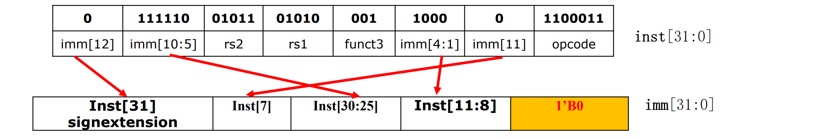
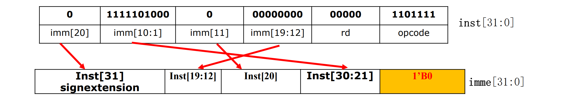
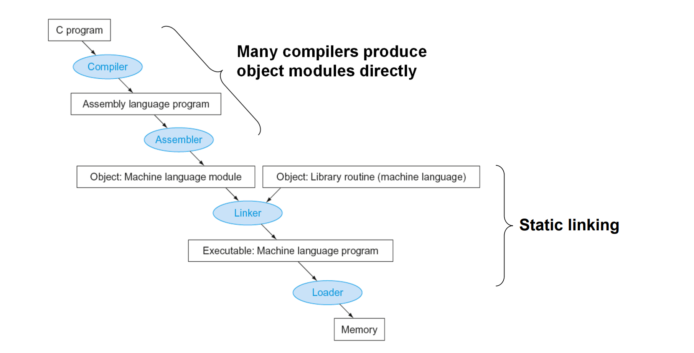
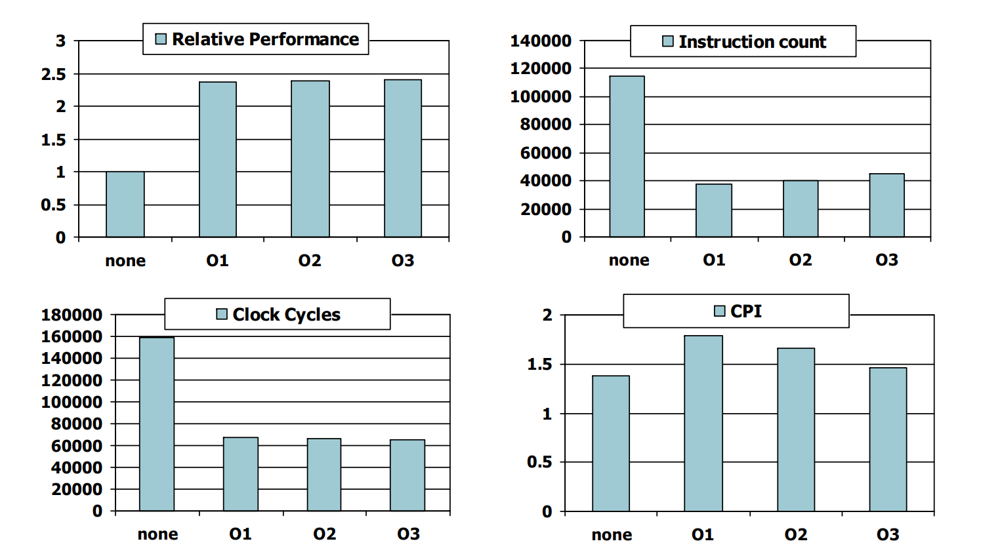

Chapter 2
2.5 Representing Instruncrions in the computer
- 高级指令->汇编指令->机器码
2.6 Logical Operations
移位、与、或、异或、非
2.7 Instruction for making decision
分支跳转
循环
其他的条件跳转（有符号数的比较）：
-
blt rs1, rs2, L1如果rs1<rs2，跳转到Lable L1处
-
bge rs1, rs2, L1如果rs1>=rs2，跳转到Lable L1处
-
slt x2, x3, x4set on less than——如果x3<x4，将x2设为1
无符号数比较的指令：bltu, bgeu
bgeu x20, x11, Outbound
Case/Switch
- 分支语句在memory中像数组一样连续存储
- 根据偏移量访问
2.8 Supporting Procedures in Conputer Hardware
过程调用
需要用更多的寄存器
-
过程调用中使用的寄存器：
- x10~x17：传递参数和返回结果的8个寄存器
- x1：记录return地址的寄存器
-
Stack
- push：sp=sp-8
- pop：sp=sp+8
Leaf procedure：不会调用别的过程的过程
- 把要用的寄存器存到栈中，用完后再ld回来
- x5-x7，x28-x31：temporary register（随便用）
- x8-x9，x18-x27：saved register（需要压栈）
Non-leaf procedure
- return的地址会改变
递归为例
2.9 communication with people
字符的表示方法:
- ascii码（128个字符）
- unicode（16-bit/32-bit）
load和store指令
- Load byte/halfword/word: Sign extend to 64 bits in rd
- lb rd, offset(rs1)
- lh rd, offset(rs1)
- lw rd, offset(rs1)
- Load byte/halfword/word unsigned: Zero extend to 64 bits in rd
- lbu rd, offset(rs1)...
- Store byte/halfword/word: Store rightmost 8/16/32 bit
- sb rs2, offset(rs1)
- sh rs2, offset(rs1)
- sw rs2, offset(rs1)
字符串的表示方法
- Place the length of the string in the first position(JAVA)
- An accompanying variable has the length
- A character in the last position to mark the end of a string(C)
拷贝字符串的例子
strcpy: addi sp, sp, -8 // adjust stack for 1 doubleword
sd x19, 0(sp) // save x19
add x19, x0, x0 // i = 0
L1: dd x5, x19, x11 // address of y[ i ] in x5
lbu x6, 0(x5) // x6 = y [ i ]
add x7, x19, x10 // address of x[ i ] in x7
sb x6, 0(x7) // x[ i ] = y[ i ]
beq x6, x0, L2 // if y[ i ] == 0, go to L2
addi x19, x19, 1 // i = i + 1
jal x0, L1 // go to L1
L2: ld x19, 0(sp) // restore x19
addi sp, sp, 8 // pop 1 doubleword off stack
jalr x0, 0(x1) // return
2.10 Addressing for Wide Immediate and Addresses
lui rd, constant - U型指令（前20位是立即数，接下来5位是目的寄存器，最后是操作符）
将立即数存在目的寄存器中，后面补零
寄存器的高32位会进行符号扩充
Branch Addressing
bne x10, x11, 2000 - SB型指令（2000 - 跳转偏移量）

- 立即数末尾补零（相当于乘二）
跳转范围：\(\pm 2^{12}\)个byte，即\(\pm 4\)k个字节
Jump Addressing
无条件跳转
jal x0, 2000 - i型指令（怎么又说j型只有这一条）

跳转范围\(\pm 1\)G字节
- For long jumps, eg, to 32-bit absolute address
- lui: load address[31:12] to temp register
- jalr: add address[11:0] and jump to target
这里有个例子
寻址Summary
这里有个大表可以查
2.11 Parallelism and Instructions: Synchronization
在load和save时，可能有并行的程序导致地址不可用，操作失败，因此加入判断
- Load reserved: lr.d rd,(rs1)
- Store conditional: sc.d rd,(rs1),rs2
- 成功时返回0
Example 1: atomic swap(to test/set lock variable)
Example 2: lock
2.12 Translating and Starting a Program

object file 和 executable file
-
静态链接：将库文件整个copy，不实时更新
-
动态链接（Dynamic Linking）
-
Lazy Linkage:
-
Java application
2.13 C Example
调用子函数：将需要保持的寄存器存起来
- 存到栈中
- 存到另一寄存器——效率更高
约定：
- 父函数保证：子函数能随便使用temporary registers (x5-x7, x28-x31)，返回给父函数的时候，x5-x7, x28-x31的值可以被改变。
- 子函数保证：返回给父函数的时候，saved registers(x18-x27) 保持父函数调用子函数前的值。
编译器的优化效果

效果与算法有关
算法很重要